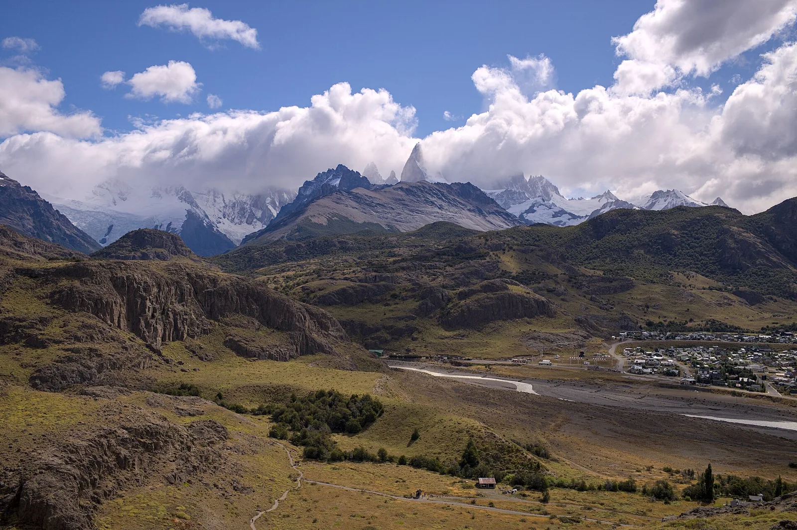
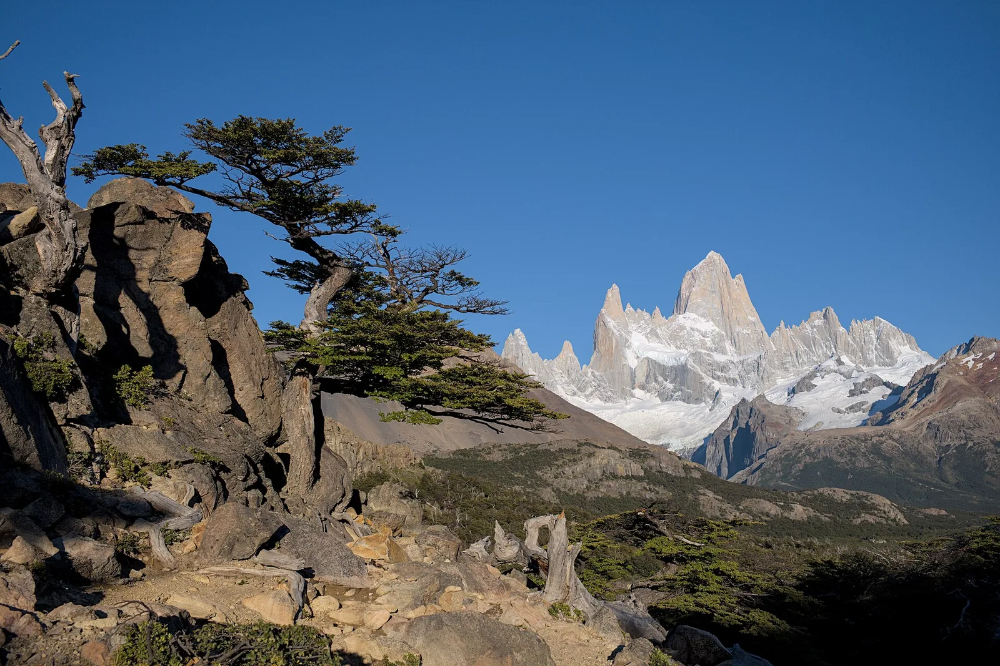

O1 · Oeste
O1 · Westen
O1 · West
El Chaltén
Y vi el Chaltén, un pueblo de montañas, glaciares y ríos y noches.
Und ich sah El Chaltén, ein Dorf aus Bergen, Gletschern, Flüssen und Nächten.
And I saw El Chaltén, a village of mountains and glaciers and rivers and nights.
Información
El Chaltén está a los pies del cerro Fitz Roy, dentro del Parque Nacional Los Glaciares, en el suroeste de Santa Cruz. El parque cubre 600.000 hectáreas y los glaciares ocupan cerca de la mitad.
La mayoría se alimenta del Campo de Hielo Patagónico Sur, el vestigio más extenso que dejó en Sudamérica la glaciación del Cuaternario. En conjunto, el parque es una reserva enorme de agua dulce.
Information
El Chaltén está a los pies del cerro Fitz Roy, dentro del Parque Nacional Los Glaciares, en el suroeste de Santa Cruz. El parque cubre 600.000 hectáreas y los glaciares ocupan cerca de la mitad.
La mayoría se alimenta del Campo de Hielo Patagónico Sur, el vestigio más extenso que dejó en Sudamérica la glaciación del Cuaternario. En conjunto, el parque es una reserva enorme de agua dulce.
Information
El Chaltén está a los pies del cerro Fitz Roy, dentro del Parque Nacional Los Glaciares, en el suroeste de Santa Cruz. El parque cubre 600.000 hectáreas y los glaciares ocupan cerca de la mitad.
La mayoría se alimenta del Campo de Hielo Patagónico Sur, el vestigio más extenso que dejó en Sudamérica la glaciación del Cuaternario. En conjunto, el parque es una reserva enorme de agua dulce.
Vi el hielo del Chaltén y del Aconcagua, ese oro blanco que te conté, retroceder año tras año.
Ich sah das Eis von El Chaltén und vom Aconcagua, dieses weiße Gold, von dem ich dir erzählte, Jahr für Jahr zurückweichen.
I saw the ice of El Chaltén and of Aconcagua, that white gold I told you about, retreating year after year.
Los Andes guardan más de 31.000 kilómetros cuadrados de hielo, desde Venezuela hasta Tierra del Fuego. Son uno de los mejores indicadores del cambio climático: si sube la temperatura se derriten, si aumentan las precipitaciones crecen.
El Chaltén está al borde del Campo de Hielo Patagónico Sur, donde entre 2000 y 2012 los glaciares perdieron en promedio casi un metro de espesor por año. Salvo el Perito Moreno y algunos casos aislados, todos retrocedieron y se adelgazaron.
Investigadores del CONICET participaron del primer estudio que comparó la evolución de todos los glaciares andinos entre 2000 y 2018, con más de treinta mil modelos de terreno hechos a partir de imágenes satelitales.
Los Andes guardan más de 31.000 kilómetros cuadrados de hielo, desde Venezuela hasta Tierra del Fuego. Son uno de los mejores indicadores del cambio climático: si sube la temperatura se derriten, si aumentan las precipitaciones crecen.
El Chaltén está al borde del Campo de Hielo Patagónico Sur, donde entre 2000 y 2012 los glaciares perdieron en promedio casi un metro de espesor por año. Salvo el Perito Moreno y algunos casos aislados, todos retrocedieron y se adelgazaron.
Investigadores del CONICET participaron del primer estudio que comparó la evolución de todos los glaciares andinos entre 2000 y 2018, con más de treinta mil modelos de terreno hechos a partir de imágenes satelitales.
Los Andes guardan más de 31.000 kilómetros cuadrados de hielo, desde Venezuela hasta Tierra del Fuego. Son uno de los mejores indicadores del cambio climático: si sube la temperatura se derriten, si aumentan las precipitaciones crecen.
El Chaltén está al borde del Campo de Hielo Patagónico Sur, donde entre 2000 y 2012 los glaciares perdieron en promedio casi un metro de espesor por año. Salvo el Perito Moreno y algunos casos aislados, todos retrocedieron y se adelgazaron.
Investigadores del CONICET participaron del primer estudio que comparó la evolución de todos los glaciares andinos entre 2000 y 2018, con más de treinta mil modelos de terreno hechos a partir de imágenes satelitales.
Galería
Galerie
Gallery


Fuentes
Quellen
Sources
- UNESCO, Centro del Patrimonio Mundial, Los Glaciares National Park — https://whc.unesco.org/en/list/145/ consultado 2026-10-05abgerufen 2026-10-05accessed 2026-10-05
- CONICET, Revelan cómo cambiaron los glaciares de la Cordillera de los Andes en los últimos veinte años — https://www.conicet.gov.ar/revelan-como-cambiaron-los-glaciares-de-la-cordillera-de-los-andes-en-los-ultimos-veinte-anos/ consultado 2026-10-06abgerufen 2026-10-06accessed 2026-10-06
- SEGEMAR, Argentina, El Campo de Hielo Patagónico Sur (PDF) — https://repositorio.segemar.gob.ar/bitstream/handle/308849217/1375/68%20-%20Campo%20de%20Hielo%20Patagonico%20Sur.pdf consultado 2026-10-06abgerufen 2026-10-06accessed 2026-10-06